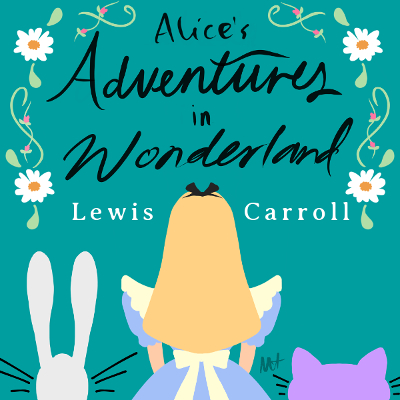
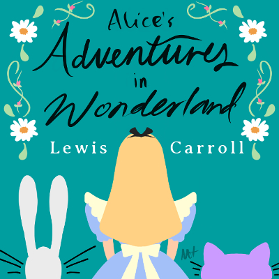
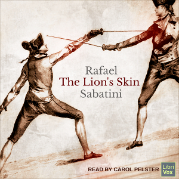
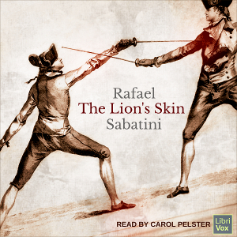
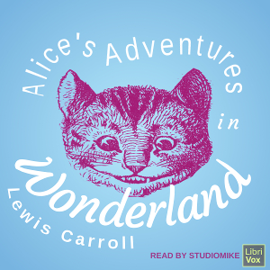
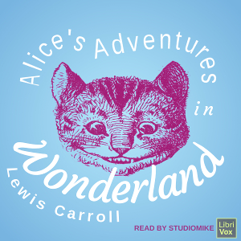

Graphic Design
LibriVox Audiobook Covers
Created with
GIMP for
LibriVox.org, a volunteer-run effort to provide free, public domain audiobooks in many languages. As required, each cover was created using public domain or Creative Commons 0 resources and open fonts.
With these covers, my goal is to provide a visualizer for the story, grab the listener's attention, and increase usability by making the title readable at thumbnail size.
I also love to challenge myself by volunteering for a variety of book genres and experimenting with different artistic styles.
Other
Just for fun, these are some posters I created using one or more of the following: iPad + Apple Pencil, Autodesk SketchBook, GIMP, and Creative Commons 0 (CC0) resources.
 



 

 
